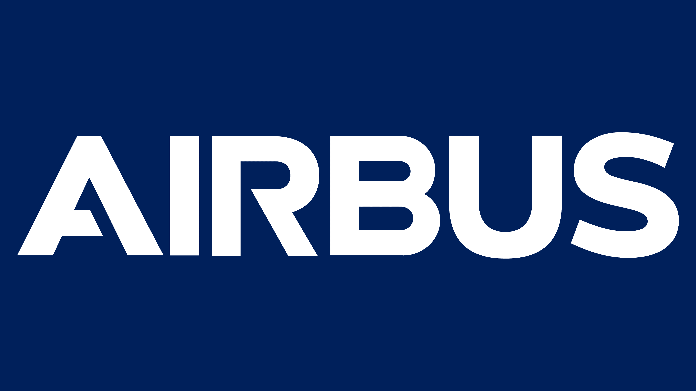
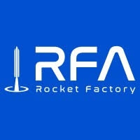
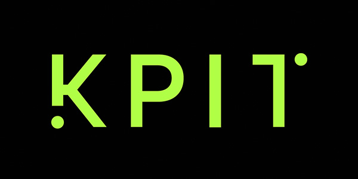

Abhishek Shankar Pannase
Engineering Complex Systems - If it moves fast, flies high, or is underwater, I have probably tried to break it.
"The fundamental cause of the trouble is that the stupid are cocksure while the intelligent are full of doubt."— Bertrand Russell

AIRBUS CTC GmbH
Systems Engineer - R&D Department
Stade - Hamburg, GermanyTranslating the physical chaos of aircraft into the precision of maths and physics KerML - SysML v2. It's a work in progress.

Rocket Factory Augsburg
Systems Engineer
Augsburg, GermanyAvionics meets propulsion. I spent my time ensuring the hardware didn't outpace the logic. Some days the architecture won; some days the wiring won.

KPIT - Jaguar Land Rover (JLR)
Systems Engineer - SOTA Connected Vehicles
Pune, India [Team - Coventry, UK]Managed SOTA updates for vehicles. I learned more from the rollback strategies than the successful deployments.
Education
MSc - Computer Engineering
Technical University Magdeburg (OVGU), GermanyBTech - Electronics and Telecommunication
DKTE Engineering Institute (Autonomous), India
MBSE•
KerML (SysML v2)•
C++•
Python•
ROS2•
Over-The-Air (OTA)•
Systems Semantics Mapping•
3D Experience (EBOM)•
Cameo•
Capella•
MBSE (KerML)•
Systems Semantics Mapping•
Python•
Requirements Engineering•
Over-The-Air (OTA)•
CAN Debugging•
Vehicle Architectures•
Verification & Validation•
3DX, Cameo-Catia, Capella•
"I would rather have questions that can't be answered than answers that can't be questioned."— Richard Feynman